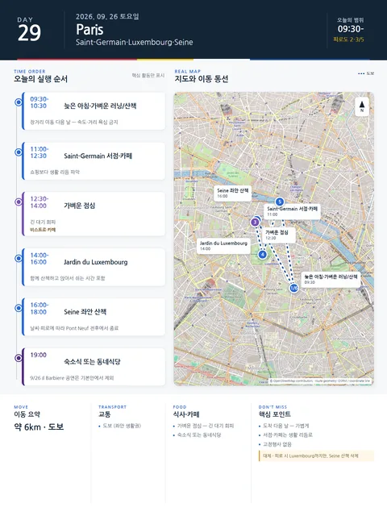

Day 29 · 9/26 토 · Paris
오늘의 주요 장소


- 핵심 실행
- Saint-Germain·Luxembourg·Seine
- 권장 출발
- 늦은 시작
- 완충
- 도착 다음 날 — 강도 낮춤
- 예약
- 이 날짜로 잡힌 예약 없음 · 현황
시간표
| 시간 | 일정 | 실행 포인트 |
|---|---|---|
| 09:30–10:30 | 늦은 아침·가벼운 러닝/산책 | 장거리 이동 다음 날, 속도·거리 욕심 금지 |
| 11:00–12:30 | Saint-Germain 서점·카페 | 쇼핑보다 생활 리듬 파악 |
| 12:30–14:00 | 가벼운 점심 | 긴 대기 회피 |
| 14:00–16:00 | Luxembourg Garden | 함께 산책하고 앉아서 쉬는 시간 포함 |
| 16:00–18:00 | Seine 좌안 산책 | 날씨와 피로에 따라 Pont Neuf 전후에서 종료 |
| 16:30–17:30 | Notre-Dame de Paris | 입장 입장 100% 무료 · 예약 공식 사이트(notredamedeparis.fr)에서만 · 제3자 플랫폼 판매 권한 없음 · 개관 공식 확인 불가 |
| 19:00 이후 | 숙소식 또는 가까운 동네식당 | 공연 없음 — 무예약 저녁 |
피로도
2–3/5
이 날의 장소
일자별 시간표와 본문 표기에서 찾은 것이다. 하루의 전부가 아니라 장소 카드가 있는 것만 담는다.
이 날의 메모
Saint-Germain, Luxembourg, Seine — 도착 다음 날의 가벼운 첫 산책 로컬 라이프
고정행사: 없음. 9/26 오페라는 도착 다음 날이라는 이유로 기본안에서 제외한다. 우천 대체:** Saint-Germain 서점·카페를 중심으로 압축한다.
꼭 해볼 것
- Luxembourg 의자에 20분 앉아 첫날보다 느린 리듬을 만든다.
- Saint-Germain에서 다시 올 서점·카페 한 곳을 정한다.
- Seine 산책은 완주 거리가 아니라 몸이 가벼운 상태로 돌아오는 것을 목표로 한다.
상세 실행 확인
- 최고 리스크
- 주말 혼잡·보행
- 우선 삭제
- Seine 좌안 산책
- 대체안
- Luxembourg까지만
- 식사·휴식
- 가벼운 점심·숙소 저녁
- 잠금 필요
- 없음
Google 실행지도
Saint-Germain과 Luxembourg Garden
지도 펼치기
지도는 펼칠 때만 불러옵니다.
Daily Action Map

실제 좌표와 OpenStreetMap을 사용한 실행용 요약입니다. 도로·대중교통 상황은 출발 직전에 다시 확인하세요.